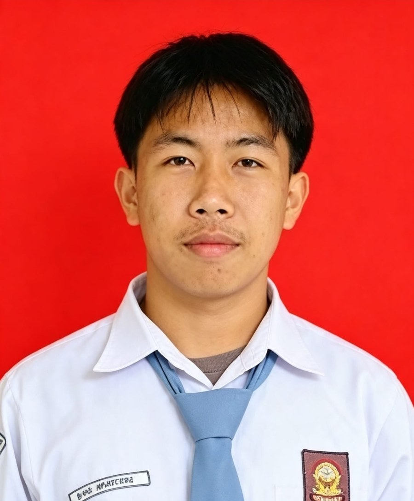
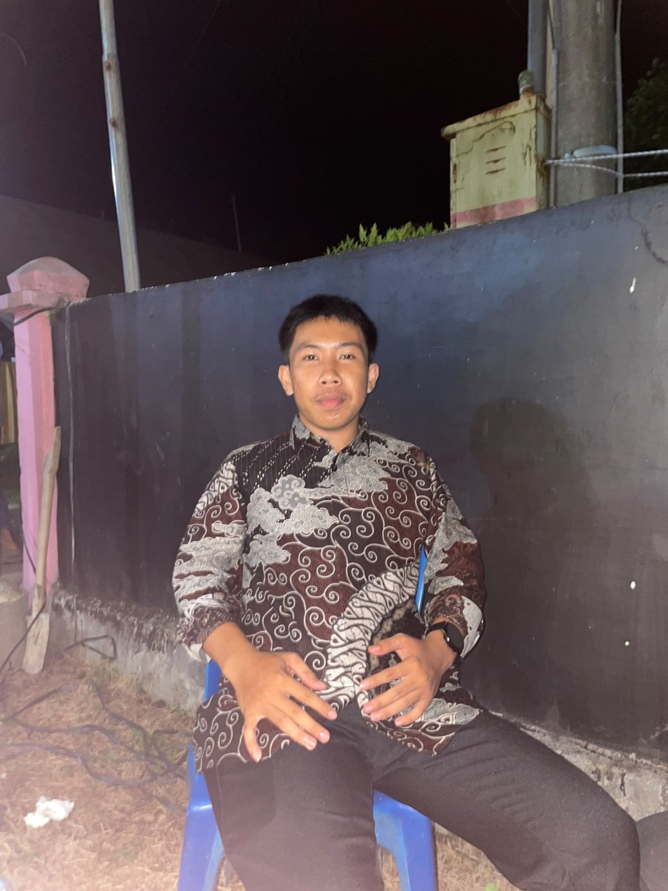
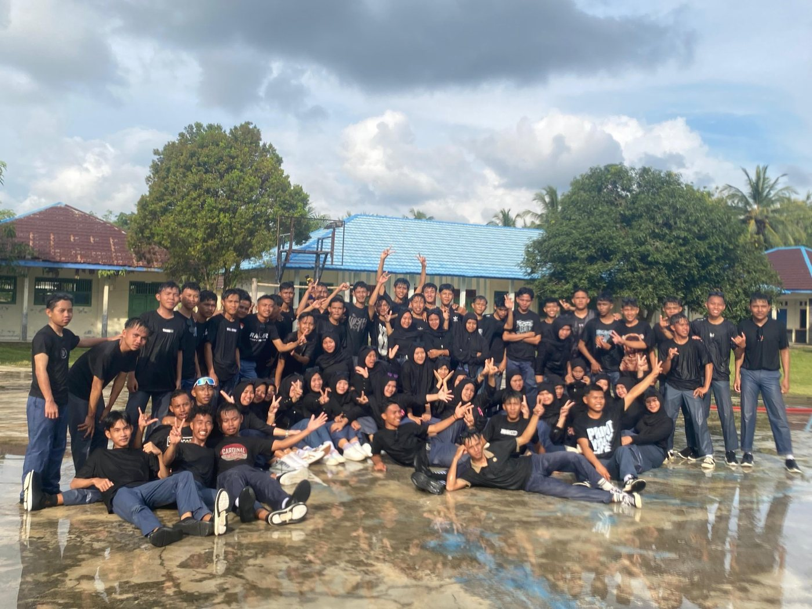
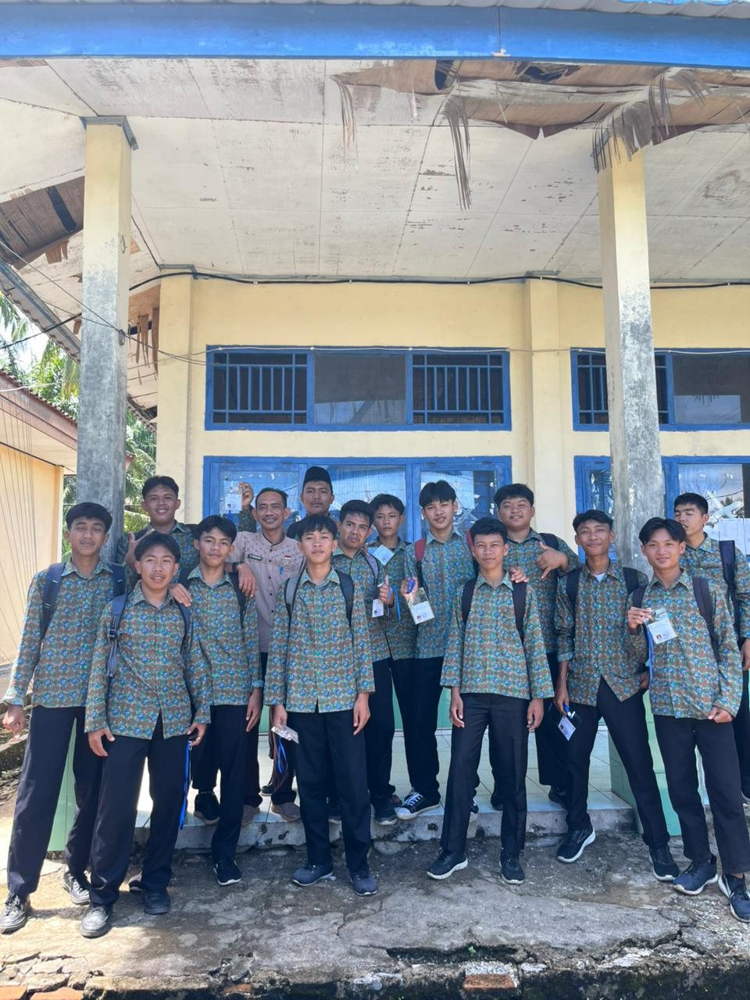
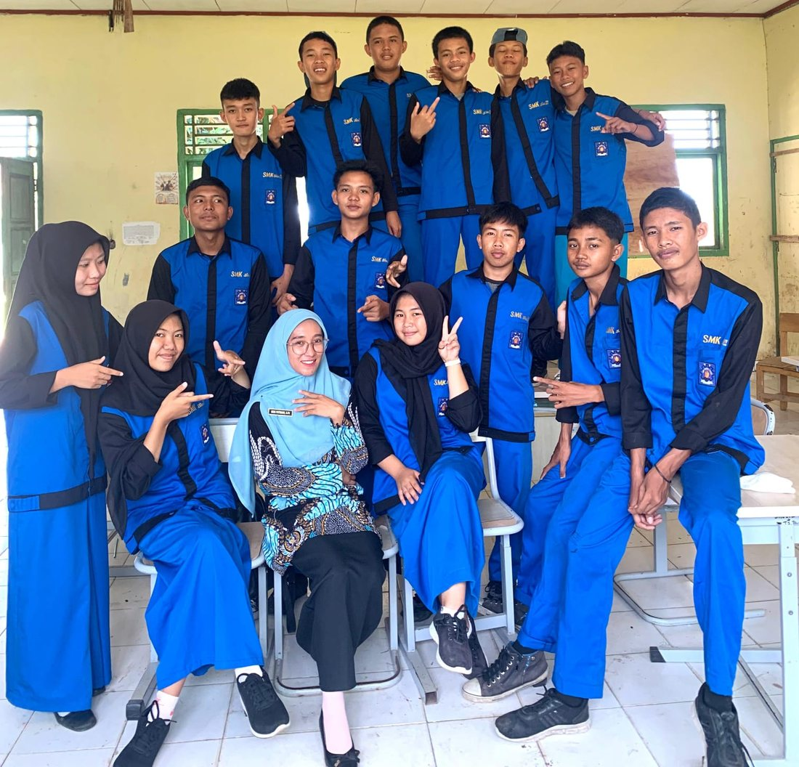

Perkenalkan, saya


Tentang Saya
Perkenalkan, nama saya Bimo Afrizon. Saya merupakan lulusan SMK Negeri 1 Kaur dan saat ini sedang melanjutkan pendidikan sebagai mahasiswa di Universitas Muhammadiyah Bengkulu.
Selama menempuh pendidikan di sekolah, saya pernah aktif mengikuti organisasi OSIS (Organisasi Siswa Intra Sekolah). Melalui pengalaman tersebut, saya belajar tentang kerja sama, tanggung jawab, kedisiplinan, serta kemampuan berkomunikasi dengan orang lain.
Saya adalah pribadi yang memiliki semangat untuk belajar, mengembangkan kemampuan, dan mendapatkan pengalaman baru. Saya berharap dapat terus meningkatkan potensi diri, baik dalam bidang akademik maupun organisasi.
Microsoft Word
60%
Desain Canva
50%
Microsoft Excel
35%
Riwayat
Organisasi
Berpartisipasi dalam kegiatan sekolah dan menjadi pengurus OSIS yang handal.



Tujuan Karier
Saya memiliki tujuan untuk mengembangkan karier di bidang Sistem Informasi dengan mempelajari teknologi, pengolahan data, serta pengembangan sistem yang dapat membantu mempermudah pekerjaan manusia.
Saya ingin meningkatkan kemampuan dalam bidang teknologi informasi, khususnya analisis sistem, pengelolaan database, dan pengembangan aplikasi. Ke depannya, saya berharap dapat menjadi tenaga profesional di bidang Sistem Informasi yang memiliki keterampilan, kreativitas, dan mampu memberikan solusi melalui pemanfaatan teknologi.
Mempelajari teknologi dan pengolahan data.
Meningkatkan kemampuan dalam analisis sistem.
Meningkatkan kemampuan dalam pengelolaan database.
Mengembangkan sistem dan aplikasi yang mempermudah pekerjaan manusia.
Kontak
Desa Kepahyang, Kec. Luas, Kab. Kaur, Provinsi Bengkulu